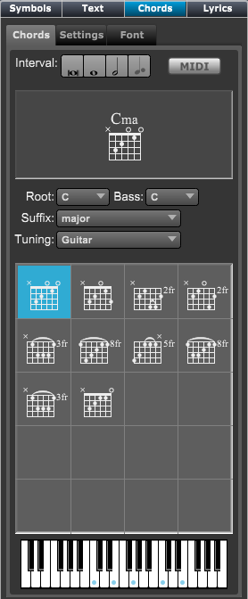

Tools Panel - Chords
Tools Panel - Chords
If Tools Panel is not showing click on the Score Tools button at top left of Control Bar and then click on the Chord section in the header if it's not active.
You can also type "Ctrl[Cmd]-Shift-C" to go directly to the Chord section.
.

|
Tabs - allows you to choose different options to set
- Chords - The chord to be entered into the score using pencil cursor.
- Settings - Various settings on how chords are displayed.
- Font - Font settings for different parts of the chord.
- Interval - Click on the note's button value to set default interval between chords.
When on typing the space bar will move this distance in the score.
When not set, typing the space bar will move to the next note's position.
- MIDI - Click this button to enable/disable inputting chords using your MIDI keyboard.
Chord Name and Type - The chord appearance
- Root - The chord's root.
- Suffix - The chords suffix or type.
- Tuning - The chord's guitar tuning.
Fingerings - The different fingerings for this chord.
- Select the guitar chord fingering for this type of chord.
- You can drag and drop these directly on the score.
- Double click to change the fingering.
Note: Once a chord has been entered into a score, it's fingering can be edited by double clicking on the chord.
|
To enter chords with the mouse:
- Select the chord name and type using the pull down menus or by typing its name like Cm7
- Click on the chord's fingering and drag and drop the chord onto your score.
To enter chords with the the computer keyboard:
- Choose the pencil tool using button on control bar.
- Click on the score where you wish to start entering chords. A small text entry box appears.
- Type in the chord to be entered, using typical symbols, CM7 for C major 7, Am7 for A minor 7, etc.
- Press the space bar to enter the chord and move to the next position.
Note: While typing, type the the back space key to remove type characters.
If there are no more characters, the chord will be deleted and the location will be moved to the previous chord position.